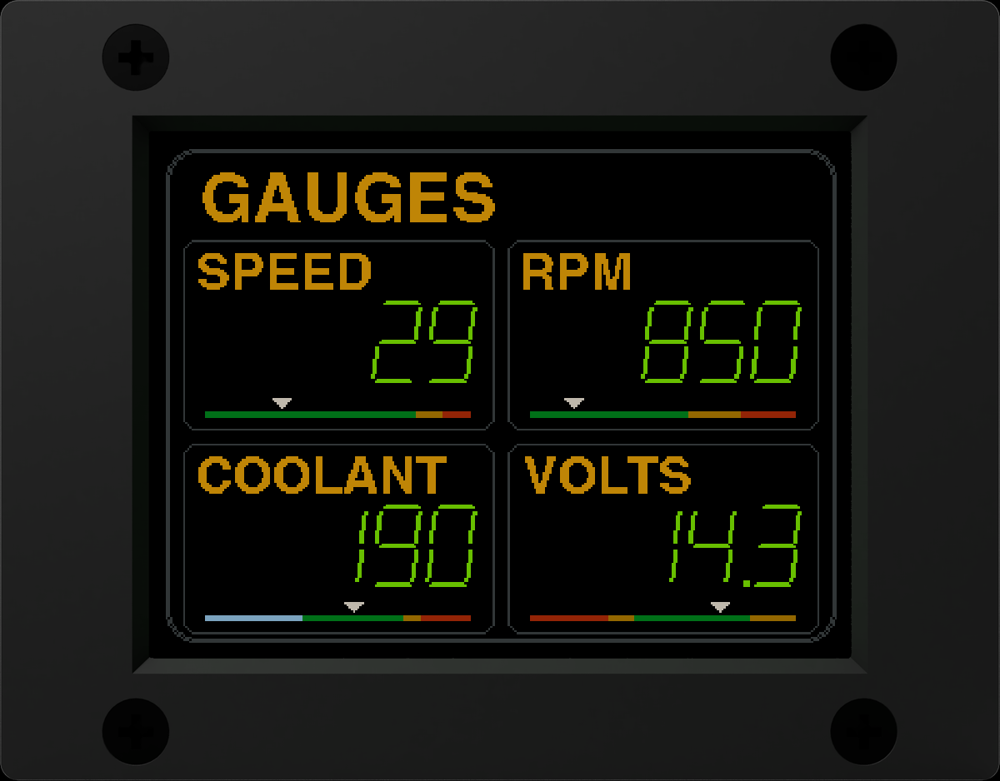

Your truck's field computer.
A factory replacement clock that does so much more. OVERCLOCK Field Computer plugs into the clock spot of a nineties Toyota truck, no wiring, and brings it modern eyes: engine codes in plain English, GPS, weather, tilt, solar, and every drive written down. The clock you remember is still the first page.
SOMETHING IS WATCHING OVER YOUR TRUCK
An older truck tells you almost nothing until something breaks. The OVERCLOCK Field Computer sits where the clock was and watches everything, all the time, so you find out early and in plain words.
- It reads the engine, constantly. Every code the moment it sets, in plain English, with the most likely causes and a straight answer: keep driving, get it checked, or pull over now.
- It takes the screen when it matters. Overheating, a dead alternator, a cooked battery, a serious code: a full-screen warning with a marching hazard border. Everything else stays small and quiet.
- It writes everything down. Seventy-plus readings, every second of every drive, on a card in the dash. Your truck's whole life in a spreadsheet, and nothing leaves the truck.
- It knows where it is. A state-of-the-art GPS sets the clock to atomic precision, counts every real mile, spots the fuel station, dims at sunset wherever you are, and greets you at the state line.
- It plugs in. The factory clock comes out, this goes in, on the factory connector. No dash modifications, no rewiring, no visible change but the screen.
- It grows with you. Every feature switches on or off. Show as little or as much as you want, add senders and solar when you are ready, and update it over WiFi.
FITS LIKE IT CAME FROM THE FACTORY
Ten minutes with a trim tool. The factory clock unplugs, the OVERCLOCK Field Computer plugs into the same connector and clicks into the same hole. Everything it needs to read your engine is in the box.
- The factory spot, the factory plug. It uses the clock's own connector and the clock's own power. Nothing cut, nothing spliced, nothing drilled in the dash.
- Bluetooth engine adapter included. A small Bluetooth Low Energy adapter goes in the truck's diagnostic port under the dash and stays there. That is the whole engine hookup.
- One knob. No touchscreen on purpose: touch targets are too small on a clock. One rotary knob does it all. Turn to move, click to act, hold to go back.
- Mount the knob your way. Drill one hole and it sits flush like a factory control (our pick). Or use the included housing and stick it anywhere with 3M VHB tape: no holes, no damage to your interior.
- A screen made for each dash. A 2-inch high-visibility, high-contrast IPS screen in the 4Runner. Tacoma and Land Cruiser models get a larger 2.8-inch IPS screen, in a bezel shaped to their dash.
- Add sensors when you want them. Screw terminals on the back for temperature probes and an oil or fuel pressure sender. An expansion port for what comes next.
ONE KNOB, EVERY PAGE
Turn to move between pages. Click to open the thing you are looking at. Hold to go back. That is the whole manual.
Gauges
Four live gauges on one page, and you pick which four right there.

One gauge, big
Click a gauge and it fills the screen. Green when healthy, amber warm, red wrong.

Health
Is anything slowly getting worse? Graphs of recent drives with a verdict in plain words.

Temperatures
Outside, cabin, fridge, freezer, engine bay, cargo, trailer or water. Four probes, your choice.

Weather
Three days of barometer and a storm warning before the storm.

Tilt and camp
Pitch and roll, and a camp view that says which wheel to lift and by how much.

Solar
Watts in, amps, and the house battery's charge, from your solar gear.

Trips and fuel
Two trip meters, the tank, range, and true MPG from the pump.

Starter battery
Resting volts, crank dip and charging, so a tired battery shows weeks before it strands you.

The retro clock
The factory clock, redrawn to the millimetre. Its buttons work, and it puts on a show.

FULL OBD, IN PLAIN ENGLISH
A cheap code reader shows you P0115 and leaves you to Google it in a parking lot. The OVERCLOCK Field Computer is checking for codes the whole time you drive, and when one sets it tells you what it is, what probably caused it, and whether you can keep going.
- Caught the second it happens. Codes are checked constantly, not when you remember to plug something in. The alert comes up right away, pending codes included, before the dash light does.
- Plain English. Every code these trucks can set, with its name and what it means, in words you can read at a stop light.
- The likely causes, most likely first. A CHECK THESE page for every code: the four things to look at before you spend money, most likely first.
- Keep driving, or pull over? Every code ranked by the drive home: stop the engine, stop soon, use caution, get it checked, or just emissions. Only the serious ones take the screen.
- A snapshot of every code. Exactly what the engine was doing the second each code set: speed, rpm, temperature, load, trims. A handheld reader plugged in later can never know that.
- Around fifty live readings. Speed, rpm, coolant, intake air, load, throttle, timing, airflow, fuel trims and more, as gauges you pick.
- Transmission temperature. Straight from the engine computer on 1999 and newer trucks. Older trucks add an aftermarket sender, which we also sell, on the screw terminals.
- Oil or fuel pressure. Add an optional pressure sender, also available from us, and see the real number all the time instead of an idiot light. Low oil pressure gets the one alert that says stop the engine now.
- Will it pass smog? The truck's self-tests as a bar of blocks, with a straight answer. Clear codes with a guarded hold, and then the truth about what happens next.
WHAT IT WATCHES FOR
On whenever the key is on, watching the whole time. Anything that cannot wait takes over the whole screen with a marching hazard border. Everything else stays out of your way.
- Overheat. The real coolant number, not a factory gauge that sits dead centre until it is too late.
- Over-voltage. Instant: a failed regulator is cooking your battery.
- Not charging. The alternator quit; the volts tell it before the lights dim.
- Serious codes. Stop engine and stop soon take the screen, in plain words.
- Low oil pressure. With a sender fitted, the alert that says stop now.
- Slow trouble. The HEALTH page graphs your battery, charging, coolant and fuel trims drive after drive and says GOOD, RISING or TOO HIGH, so a slide shows weeks before it strands you.
- Fridge, freezer, storm, towing. Each with its own switch. Every alert fails to off: a sensor that goes quiet disarms its alert instead of crying wolf.

IT KNOWS WHERE IT IS
A state-of-the-art GPS receiver inside and an antenna on the case. It works on every truck, whatever the year, with no signal and no account.
- Atomic-clock time. The clock sets itself from the satellites and stays exact, time zone included. Cross a line and the hour is right. You will never set it.
- Speed from the sky. Ground speed from satellites, even on a truck that cannot report it.
- Every actual mile. Engine data and GPS counted together, each trusted only when it deserves to be, so a parked truck never gains a foot and a tunnel never loses one.
- Altitude, climb and grade. Barometer and GPS together, with gain and loss since you left.
- It dims when the sun goes down. Where you are. Sunrise and sunset anywhere in North America, worked out for the truck's real position, so it dims at the right minute in Yuma and in Yellowknife. Or wire it to the headlights. Night mode keeps your night vision.
- It notices the pump. Pull in for fuel and the dash asks if you filled up. It learns your stations, and every fill makes MPG and range more accurate.
- Welcome to Oregon. Cross a state line and the sign comes up: the state, FIRST TIME HERE or how many you have visited. It remembers every state, province and country you have driven into.
- Places and home. Save places, get a WELCOME HOME sign, and a road-trip page with distance, time and fuel day by day.
IT WRITES EVERYTHING DOWN
This is the powerhouse. A flight recorder on a memory card in the dash, writing every reading once a second for as long as the key is on. No cloud, no account, no subscription, and none of it leaves the truck unless you carry it out.
- Every second of every drive. More than seventy readings a second: speed, rpm, every temperature, volts, position, altitude, fuel, tilt and the rest.
- Every start, every code, every tank. Resting volts and the crank dip. Each code as it comes and goes, with its snapshot. Real gallons against real miles.
- Every parked hour. Key off, the dash wakes hourly, writes one line (battery, pressure, probes, position, solar) and sleeps. It will not flatten the battery: you pick the volts where it stops.
- Room for years. An 8 GB card holds over ten thousand hours of driving. For most trucks that is years without ever clearing it, and the card is checked at every start so a dying card cannot log in silence.
- Compare anything to anything. Open the files in any spreadsheet and graph it. Did the thicker oil help? Did that fuel additive do anything? Now you have the numbers instead of a feeling.
- Your drives on a map. Export any drive as KML or GPX and see the route, with speed, in Google Earth or your mapping app.
- Privacy at heart. One switch turns off all location logging for good, and the position columns simply stay empty. It is your truck and your data, on a card you can hold.
YOUR PHONE IS THE BIG SCREEN
Turn WiFi on and the dash makes its own hotspot or joins yours. Scan the code on the screen and the phone page opens. Save it to your home screen and it works like an app.
- Files. A calendar of every day the dash logged. Tap the days and download one zip.
- Live. Watched engine values with a running trace, and everything else the truck answers.
- Codes. Read, explain and clear trouble codes from the phone, snapshot included.
- Photos. Send pictures for the slideshow on the clock.
- WiFi updates. New features arrive as a file you send from the phone. The dash checks it is whole, undamaged and built for this unit before it installs. Updates also go in from the card.
- Setup. Networks, the state map, the fuel station list, solar gear and Bluetooth batteries.
FOR THE CAMP AND THE TRAIL
The parts that matter when the engine is off, and the solar gear you already own, on the dash.
- Solar and house battery. Connects over Bluetooth to Victron solar controllers and battery shunts, and directly to smart batteries with Bluetooth built in (LiTime, Redodo, Power Queen, Epoch and others). Watts in, amps out, charge left. More brands as they are added.
- Several batteries, one bank. Tie two or more Bluetooth batteries together and the dash shows them as one big battery.
- Fridge and freezer watch. Warm goes amber, two hours warm goes red, and a pop-up says how long the milk has been in trouble.
- Camp level. A top-down truck with the inches of block each wheel needs for a flat tent, from the built-in tilt sensor.
- Weather coming. The built-in barometer watches the pressure. Falling a storm's worth in three hours gets a notice, and parked overnight it keeps watching.
- Sunrise and sunset. The next one, on a corner of the clock.
- Starter battery. Rest, crank and charge measured on every start, so a tired battery shows weeks early.
- Records, 0 to 60, games, slideshow. Top speed, highest elevation, steepest tilt, a GPS 0 to 60 timer, four retro games, stopwatch, timers and alarms. Because a dash clock should also be fun.
PURPOSE-BUILT, NOT BOLTED TOGETHER
Not a phone holder, not a kit, not a hobby board in a box. A fully custom circuit board designed from a blank sheet for this one job, in a case made for your dash.
- A fully custom circuit board. Every part on it was chosen for a truck: the heat, the cold, the spikes a starter makes. Nothing off the shelf, nothing you could buy as a module.
- Two processors. One runs the screen, sensors and logging. The second does nothing but Bluetooth, so the screen never stutters and the engine link never drops.
- High-visibility IPS screen. 2 inch in the 4Runner, 2.8 inch in the Tacoma and Land Cruiser. High contrast, readable in sun, dimmed right at night.
- Built-in barometer and altimeter. Weather trends and storm warnings, and altitude that stays honest by checking itself against GPS.
- High-precision voltage meter. Reads the starter battery to the hundredth of a volt, twenty times a second through a crank, which is how a tired battery or a lazy alternator shows up weeks early.
- High-precision gyro and accelerometer. Pitch and roll for the trail, camp levelling that says which wheel to lift, and records of your steepest climb.
- Protected. Its own fuse, surge protection against the spikes trucks make, reverse-polarity protection, and a graceful fifteen-second shutdown when the key goes off. Nothing to wear out: no USB port, no coin cell.
- Made in Vancouver, Washington. Designed, assembled and tested by someone who drives one.
IT GROWS WITH YOU
Start as a clock. End up wherever you like. Every feature is a switch, and the hardware has room you have not used yet.
- Fully customizable. Two clock fonts, your colours, and four widget corners you fill yourself: date, outside temperature, speed, heading, altitude, sunset, MPG, range, volts, coolant, rpm and more.
- As little or as much as you want. Every page and every alert switches on or off. Presets for TRAVEL, CAMP, TEMPS, ENGINE and TOWING, or save three of your own.
- Add sensors over time. Four temperature probes, a transmission temperature sender, an oil or fuel pressure sender. Each one appears as a gauge and a log column the moment it is wired.
- Add solar when you have it. Pair a controller, a shunt or a smart battery over Bluetooth and the SOLAR page shows up.
- New features over WiFi. The firmware keeps improving. Updates come as a file you send from your phone, with the dash checking every byte before it installs.
- An expansion port for what comes next. A powered, fused port on the back for OVERCLOCK Field Computer add-ons: wireless sensor modules, more gauges, more inputs. Buy the clock now; the truck keeps learning.
WHAT IT WILL NOT DO
Trust is built here, not in the feature list.
- It does not tune or reprogram anything. It reads. The one thing it ever writes is clearing codes, and only when you arm it and hold.
- It never guesses. If a sensor has not answered, the screen says so instead of inventing a number.
- No cloud, no account, no subscription. Your data lives on a card in your dash.
- No position logging unless you want it. One switch, and the column in the file stays empty.
- No live engine data before 1996. Those trucks have nothing to read. They get GPS and everything else, and the engine pages simply are not there.
TRY THE REAL THING
The real firmware, in your browser. Every page, thirteen faults to inject, and a truck to tip.